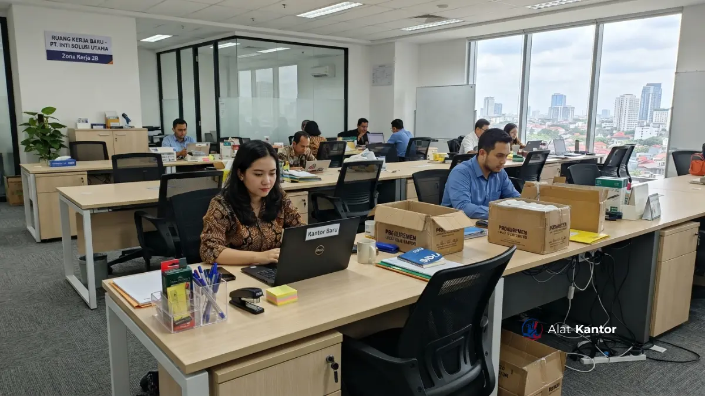

Ringkasan Artikel
- Paket pengadaan kantor mencakup tiga pilar utama: furniture, ATK/barang habis pakai, dan perangkat digital pendukung.
- Skala paket dapat disesuaikan, dari kebutuhan 5-10 staf hingga pengadaan instansi berskala besar.
- Dokumen legal (Surat Penawaran Harga, spesifikasi teknis, faktur pajak) menjadi bagian tidak terpisahkan dari proses pengadaan instansi.
- Kesalahan umum dalam merancang paket biasanya berasal dari estimasi kebutuhan yang tidak akurat dan minimnya kelengkapan dokumen.
- Memilih vendor satu pintu dapat memangkas waktu koordinasi dibanding membeli setiap kategori barang secara terpisah.
Apa Itu Paket Pengadaan Kantor dan Kenapa Penting?
Paket pengadaan kantor adalah rangkaian produk dan layanan yang disusun sebagai satu kesatuan untuk memenuhi kebutuhan operasional sebuah ruang kerja atau ruang kelas baru. Paket ini penting karena membantu instansi menghindari proses pembelian yang terfragmentasi dan memakan waktu.
Bagi instansi pemerintah, sekolah, kampus, maupun perusahaan swasta yang baru membuka unit kerja atau ruang kelas, menyusun kebutuhan satu per satu berisiko menimbulkan ketidaksesuaian spesifikasi, keterlambatan pengiriman, dan kesulitan menyatukan dokumen legal dari banyak vendor berbeda. Pendekatan paket menyatukan proses perencanaan, pengadaan, hingga instalasi dalam satu alur kerja.
Kebutuhan pembukaan kantor atau kelas baru berkaitan erat dengan siklus anggaran tahunan instansi, di mana proses pengadaan barang dan jasa pemerintah mengikuti mekanisme yang diatur melalui sistem elektronik seperti SIPLah untuk sektor pendidikan dan LPSE untuk instansi pemerintah secara umum.
Apa Saja Jenis-Jenis Paket Pengadaan Kantor yang Tersedia?
Jenis paket pengadaan kantor dibedakan berdasarkan skala kebutuhan dan fungsi ruang, mulai dari paket start-up untuk kantor baru, paket ruang rapat interaktif, hingga paket inventaris instansi skala besar.
Beberapa kategori paket yang umum ditemukan pada penyedia pengadaan kantor meliputi:
- Paket Start-up / Kantor Baru: dirancang untuk kelengkapan lima hingga sepuluh staf, biasanya berisi set meja dan kursi kerja, meja untuk posisi manajerial, lemari arsip, serta starter pack ATK.
- Paket Smart Meeting Room / Kelas Interaktif: berfokus pada sistem rapat atau pembelajaran hybrid, mencakup interactive flat panel, meja conference atau kelas berkapasitas menengah, kursi ergonomis, dan perangkat audio-video pendukung.
- Paket Inventaris Instansi Skala Besar: melayani pengadaan massal yang mencakup kustomisasi lemari arsip, brankas tahan api, videotron, serta suplai ATK dalam jumlah besar untuk kebutuhan rutin instansi.
Pemilihan jenis paket sebaiknya disesuaikan dengan fungsi ruang, jumlah pengguna, dan rencana pengembangan jangka menengah instansi, bukan semata-mata berdasarkan harga termurah.

Bagaimana Cara Kerja Proses Pengadaan Kantor Baru?
Proses pengadaan kantor baru umumnya berjalan melalui tahap konsultasi kebutuhan, penyusunan RAB, penawaran resmi, penerbitan dokumen legal, lalu pengiriman dan instalasi di lokasi.
Secara garis besar, alur kerja pengadaan paket kantor mengikuti pola berikut:
- Konsultasi kebutuhan: tim pengadaan instansi mendiskusikan jumlah staf, luas ruang, dan fungsi ruang dengan pihak vendor.
- Penyusunan Rencana Anggaran Biaya (RAB): vendor membantu menyusun rincian kebutuhan sesuai anggaran yang tersedia.
- Penerbitan Surat Penawaran Harga dan spesifikasi teknis: dokumen ini menjadi dasar bagi instansi untuk melakukan proses administrasi internal maupun pelaporan ke sistem LPSE/SIPLah.
- Pengiriman dan instalasi: barang dikirim ke lokasi dan dirakit oleh teknisi, khususnya untuk furniture dan perangkat digital yang membutuhkan pemasangan.
- Penerbitan dokumen pelunasan: kuitansi resmi bermaterei dan faktur pajak diterbitkan sebagai bagian dari kelengkapan audit keuangan instansi.
Faktor Apa Saja yang Memengaruhi Biaya dan Spesifikasi Paket?
Biaya dan spesifikasi paket pengadaan kantor dipengaruhi oleh jumlah unit yang dibutuhkan, tingkat kustomisasi furniture, jenis perangkat digital, serta lokasi pengiriman dan instalasi.
- Volume pesanan: pembelian dalam jumlah besar biasanya memungkinkan negosiasi harga grosir dibanding pembelian satuan.
- Tingkat kustomisasi: kebutuhan seperti ukuran meja direktur khusus atau kapasitas brankas tahan api tertentu dapat memengaruhi waktu produksi dan biaya.
- Jenis perangkat digital: pemilihan antara interactive flat panel ukuran 65 inci atau 75 inci, atau kebutuhan videotron indoor versus outdoor, berdampak pada spesifikasi teknis paket.
- Lokasi pengiriman: jarak dan aksesibilitas lokasi turut memengaruhi waktu pengiriman dan kebutuhan koordinasi teknisi instalasi.
Karena kombinasi faktor tersebut sangat bervariasi antarinstansi, kisaran harga dapat bervariasi tergantung spesifikasi, volume pesanan, dan lokasi pengiriman. Hubungi tim kami untuk penawaran resmi melalui konsultasi WhatsApp alatkantor.
Apa Saja Kesalahan Umum Saat Merancang Paket Pengadaan Kantor?
Kesalahan umum dalam merancang paket pengadaan kantor meliputi estimasi kebutuhan yang tidak akurat, mengabaikan kelengkapan dokumen legal, dan memilih vendor tanpa mempertimbangkan layanan purnajual.
- Estimasi jumlah staf atau siswa yang kurang akurat, sehingga paket yang dibeli tidak sesuai kapasitas ruang.
- Mengabaikan kelengkapan dokumen legal seperti kuitansi bermaterei dan faktur pajak, yang berisiko menyulitkan proses audit keuangan instansi.
- Tidak mempertimbangkan layanan instalasi dan purnajual, padahal pemasangan furniture dan perangkat digital yang tidak tepat dapat memengaruhi kenyamanan dan keamanan penggunaan.
- Memilih vendor berdasarkan harga termurah tanpa mengecek rekam jejak, yang berpotensi menimbulkan keterlambatan atau ketidaksesuaian spesifikasi.
Perbandingan Membeli Terpisah versus Paket Bundling
Membeli barang secara terpisah memberi fleksibilitas memilih vendor per kategori, sementara paket bundling menawarkan efisiensi waktu koordinasi dan kemudahan kelengkapan dokumen dalam satu proses pengadaan.
| Aspek | Membeli Terpisah | Paket Bundling |
|---|---|---|
| Waktu koordinasi | Lebih lama, banyak vendor | Lebih singkat, satu vendor |
| Kelengkapan dokumen | Berpotensi tersebar di banyak faktur | Terpusat dalam satu set dokumen |
| Konsistensi spesifikasi | Bergantung masing-masing vendor | Lebih terstandardisasi |
| Fleksibilitas harga per item | Lebih tinggi | Umumnya lebih kompetitif untuk volume besar |
Untuk instansi dengan kebutuhan mendesak menyiapkan kantor atau kelas baru, pendekatan paket bundling umumnya lebih efisien, meski membeli terpisah masih relevan bila instansi hanya membutuhkan satu-dua kategori barang saja.
Bagaimana Memastikan Kelengkapan Dokumen Legal Pengadaan?
Kelengkapan dokumen legal pengadaan kantor dapat dipastikan dengan meminta Surat Penawaran Harga, spesifikasi teknis tertulis, kuitansi resmi bermaterei, dan faktur pajak sejak awal proses transaksi.
Instansi pemerintah dan sekolah umumnya memerlukan dokumen ini untuk kepentingan audit internal maupun pelaporan sistem pengadaan elektronik. Pembahasan lebih rinci mengenai cara mengurus kuitansi bermaterei yang sah untuk transaksi B2B/B2G dapat dibaca pada artikel Kaidah Perpajakan B2B: Cara Mengurus Kuitansi Bermaterei yang Benar.
Bagi instansi yang membutuhkan pasokan ATK dalam jumlah besar sebagai bagian dari paket pengadaan, ulasan mengenai sumber grosir dapat dilihat pada artikel Grosir ATK Malang Raya: Pengiriman Cepat dan Harga Grosir Resmi. Informasi resmi tata cara pengadaan barang/jasa pemerintah juga dapat dipelajari melalui portal LKPP (lkpp.go.id).
Layanan pengadaan paket kantor seperti ini umumnya melayani wilayah Jakarta, Surabaya, Malang, Denpasar, Makassar, serta area lain di seluruh Indonesia sesuai kebutuhan instansi.